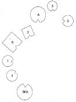
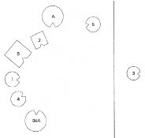
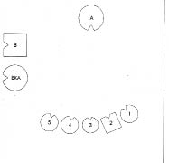
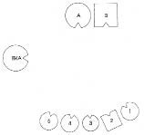

KATILIMCI Daha önce anoreksiyadan söz etmiştiniz. Bu konuya, nereden kaynaklandığına biraz değinmeniz mümkün mü?
HELLINGER Bu salonda anoreksik birisi var. Sistemini dizip etkili olan dinamiği inceleyebiliriz.
Julia’ya İster misin?
JULIA Evet.
HELLINGER gruba Hastaneden yeni çıktığı için biraz daha iyi beslenmiş görünüyor.
Julia’ya Bir şey anlatmana gerek yok. Yalnızca köken sistemini diz. Kimlerden oluşuyor?
JULIA Babam, annem, ben ve dört kardeşimden. Eski erkek arkadaşımı da katmak isterim, çünkü hastalığım onunla tanıştığımızda ortaya çıktı.
HELLINGER Ona gerek yok. Yalnızca köken ailene ihtiyacımız var. Ebeveyninden biri daha önce evlilik ya da ciddi bir ilişki geçirmiş mi?
JULIA Ciddi bir ilişki değil de, babamın hayatında önemli bir rol oynayan bir kadın olmuş. Onunla bir ilişkisi olmasa da gölgesi hâlâ dolaşıyor.
HELLINGER Onu da dizelim.
1. Resim

B Baba
A Anne
1 İlk çocuk, kız
2 İkinci çocuk, oğlan
3 Üçüncü çocuk, kız, anoreksik (=Julia)
4 Dördüncü çocuk, kız
5 Beşinci çocuk, kız
BKA Babanın kız arkadaşı
HELLINGER Baba nasıl?
BABA Kız arkadaşını temsil eden kadını göstererek O kim?
HELLINGER Gizli kız arkadaş.
BABA Dizime katıldığından beri kendimi iyi hissediyorum.
Grupta gülüşmeler
BABA Ondan önce, kendime bir kadın aramanın vakti diye geçmişti içimden.
HELLINGER Anne nasıl?
ANNE Berbat. Bu sistemde işim ne, bilmiyorum.
HELLINGER Çocuklar nasıl?
İLK ÇOCUK Bir yandan babanın yanında kendimi çok iyi hissediyorum, bir yandan da annemin arkamda olmasını istiyorum.
İKİNCİ ÇOCUK Ben kendimi çok rahatsız hissediyorum. Anneyle baba arasında kaldım. Annem arkamda, kendimi böyle öne sürülmüş hissediyorum, iyi değilim.
ÜÇÜNCÜ ÇOCUK Anneme yardım etmem gerektiğini hissediyorum.
DÖRDÜNCÜ ÇOCUK Ben annemin yanına gitmek istiyorum. Annemin önünde durduğu için erkek kardeşe kızgınlık duyuyorum. Öteki kadının yanımda ne aradığınıysa bilmiyorum.
HELLINGER Şimdi küçük bir deney yapalım.
Julia’nın temsilcisine Dışarı çık ve kapıyı arkandan kapa bakalım.
Julia dışarı çıkarak kapıyı arkasından çarpar.
2. Resim

HELLINGER Erkekte ne değişti?
BABA Dayanamıyorum. Dayanılır gibi değil.
HELLINGER Ne?
BABA Yokluğu. Çocuğumdu o benim!
HELLINGER gruba Anoreksiyanın ardındaki dinamik, “Sen kaybolacağına ben olurum, babacığım”dır. Kız giderse baba ailesiyle kalabilir. Buradaki dinamik bu. Baba bu kadına doğru çekiliyor ve anoreksik kız gittiği için o kalmak zorunda. Kötü bir çözüm ama anoreksiyanın anlamı bu. Açıkça gösterebildim mi?
KATILIMCILARIN ÇOĞU Evet.
HELLINGER Şimdi daha iyi bir çözüm arayalım. Onu içeri çağrın!
Hellinger, baba ve kız arkadaşını uzağa, anneyi de çocukların karşısına yerleştirir.
3. Resim

HELLINGER Kadın şimdi nasıl?
ANNE Hafifledim.
İLK ÇOCUK Karmaşa içinde.
İKİNCİ ÇOCUK Daha iyi.
ÜÇÜNCÜ ÇOCUK Sırada olmak güzel.
DÖRDÜNCÜ ÇOCUK İdare eder.
BEŞİNCİ ÇOCUK Karışık.
HELLINGER Baba nasıl?
BABA “Kız arkadaşla bir ilişki olabilir mi, bu bir başlangıç mı?” ve “Hiç mi yürümez?” düşünceleri arasında gidip geliyorum.
HELLINGER Bu güzel bir düş.
Baba başıyla onaylar
BABANIN KIZ ARKADAŞI Deminki yerimde çok iyiydim. Hepsi görüş alanımın içindeydi ve bunun benin ailem olduğu duygusunu taşıyordum. Şimdi burada hiç iyi değilim.
HELLINGER Şimdi başka bir çözüm denemesi yapalım.
4. Resim

HELLINGER Şimdi nasıl?
ANNE Daha iyi.
BABA Selam çocuklar!
İLK ÇOCUK Kendimi sevgi dolu hissediyorum.
İKİNCİ ÇOCUK Az önce baba gittiği için öfke duyuyordum. Böyle daha iyi.
ÜÇÜNCÜ ÇOCUK İyi.
DÖRDÜNCÜ ÇOCUK Böyle tamam.
BEŞİNCİ ÇOCUK Benim için de iyi.
HELLINGER gruba Kadın erkeği bütünüyle almamış; kendisini erkekle diğer kadın arasına yerleştirirken yaptığının bütünüyle bilincinde değilmiş. Erkek de kadını bütünüyle almamış. Ve ortaya öyle bir durum çıkmış ki, babayı ailede tutmak için onun yerine kız evlat çekip gitmek istiyor.
Julia’ya Kendi yerine geçmek ister misin?
JULIA Kendimi o kadar merkezde hissediyorum ki buna dayanabilmek çok güç.
HELLINGER Mutsuzluk ve ölüm daha kolay. Fark ediyor musun?
Julia başını kuvvetle evet anlamında sallar.
HELLINGER Şimdi anneye bak ve “Anneciğim, ben kalıyorum” de.
JULIA Anneciğim, ben kalıyorum. Anneciğim ben kalıyorum.
HELLINGER “Babam gitse bile ben kalıyorum.”
JULIA Babam gittiğinde bile ben kalıyorum.
HELLINGER Çekinme, kendi sözcüklerinle söyle.
JULIA Anneciğim ben kalıyorum, babam gitse bile.
HELLINGER Ne hissettiriyor bu sana?
JULIA İnanılması güç bir konum bu.
HELLINGER Bu anne için nasıldı?
ANNE İyi. Daha önce, o dışarı çıktığında ben de çıkmak istemiştim.
BABA Bu ifadeler beni özgürleştirdi, suçluluk duygularımdan da kurtardı.
HELLINGER Julia’ya Annenin hemen yanında dur! Bak ona ve “Anneciğim, ben kalıyorum” de.
JULIA Kararlı, berrak bir sesle Anneciğim, ben kalıyorum.
HELLINGER gruba Sesi ne güzel çıktı, değil mi?
Grupta gülüşmeler
JULIA Burada bunu söylemek daha kolay geldi.
HELLINGER Doğru. Dün seninle konuşurken ne demiştim? Senin yerin neresi?
JULIA Burası, annemin yanı.
HELLINGER gruba Çoğu terapötik teorinin aksine anoreksikler annenin yanında güvendedir. Burada bunu kanıtladık. Umarım! –Tamam, bu kadar.